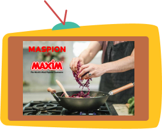
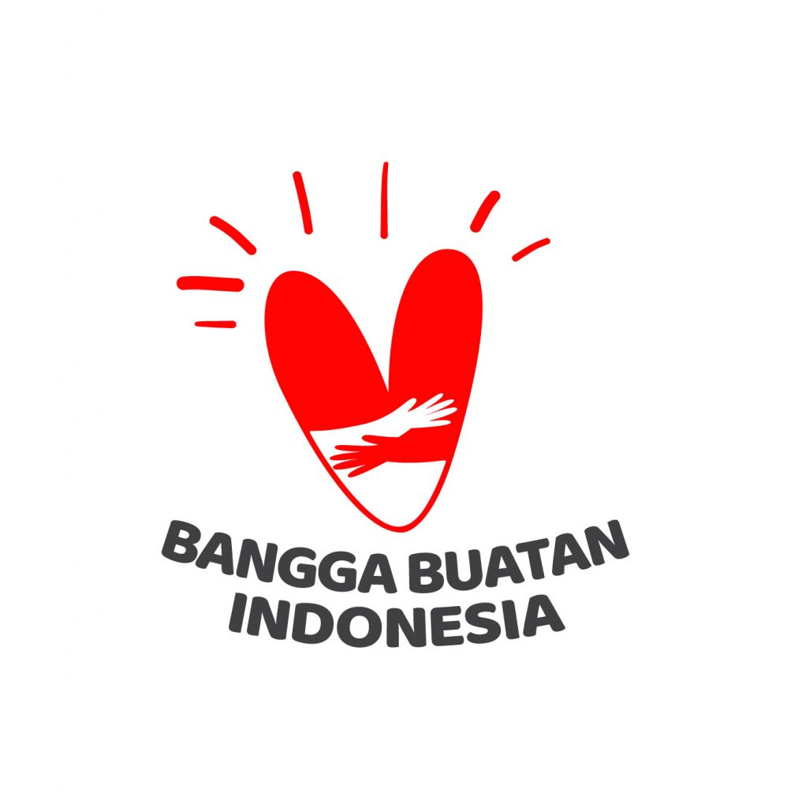

Paling males gak sih, kalau lagi masak, terus bekas makanannya nempel banget di alat masak. Susah dicuci. Nih-nih buat kamu yang punya problem sama, berarti kamu perlu tau kalau Indonesia punya produk local yang memproduksi alat masak anti lengket loh. Ya, Maxim adalah pelopor alat masak anti lengket pertama di Indonesia.

Mungkin dulu kamu Taunya kalau Maxim itu produk luar negri kan? Eitsss.. jangan salah, Maxim ternyata produk Indonesia asli, salah satu produk Maspion juga. PT Maspion Teflon Division didirikan pada 1987 dan merupakan anak perusahaan dari Maspion Group dengan spesialisasi pembuatan peralatan masak anti lengket berbahan dasar aluminium dengan merk Maxim.
Walapunun Maxim ini 100% produk Indonesia, tapi jangan ragukan kualitasnya. Produk dari Maxim bahkan sudah di expor ke berbagai negara diantaranya Kenya, Malaysia, Mauritius, Myanmar, Peru, Filipina, Singapore, Thailand dan Vietnam. Wah banyak banget ya. Kamu bisa kunjungi katalog produk maxim di web resminya maxim.co.id.
br
|  |
Yuk, cintai dan produk dalam negri. Jangan lupa pakai Maxim, biar masakan gak lengket-lengket lagi. Cukup aku dan kamu aja yang lengket. |
~Aga
Sumber gambar:
https://maximhousewares.wordpress.com/